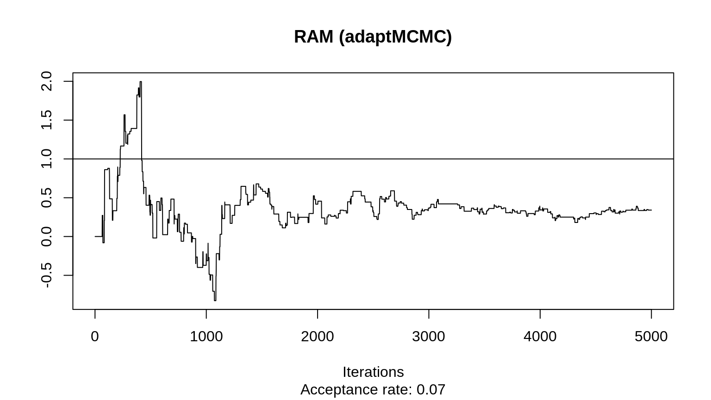
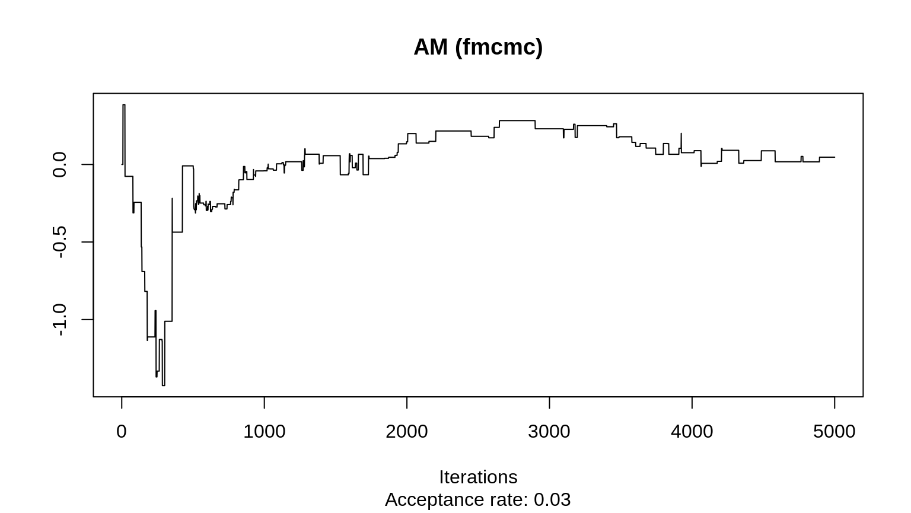
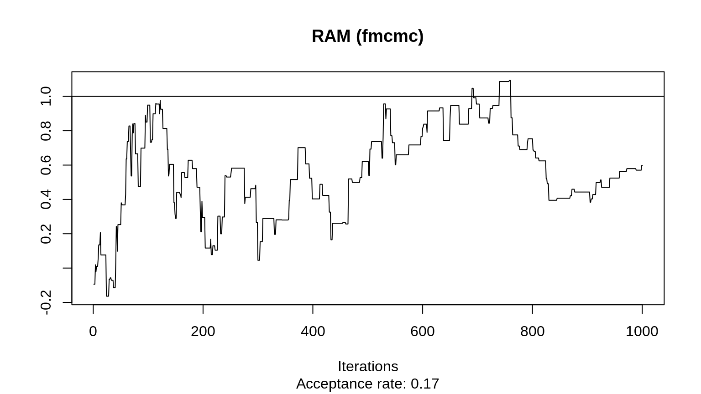

set.seed(12314)
k <- 100
n <- 500
mu <- rnorm(k)
S <- diag(k)
dat <- MASS::mvrnorm(n, mu, Sigma = S)
n_samples <- 1000library(coda)
library(fmcmc)
ans_fmcmc <- fmcmc::MCMC(
initial = rep(0, k),
fun = logpost,
nsteps = n_samples,
kernel = kernel_adapt(Sigma = diag(k)*.1, freq = 1)
)
ans_fmcmc_ram <- fmcmc::MCMC(
initial = rep(0, k),
fun = logpost,
nsteps = n_samples,
kernel = kernel_ram(Sigma = diag(k)*.1, freq = 1)
)ans_adaptMCMC <- adaptMCMC::MCMC(
p = logpost,
n = n_samples,
init = rep(0, k),
acc.rate = .24,
scale = rep(.1, k)
)
#> generate 1000 samples
ans_adaptMCMC <- mcmc(ans_adaptMCMC$samples)niceplot <- function(x, main = NULL, lvl = 1, which. = 1) {
traceplot(x[, which., drop = FALSE], main = main)
sapply(lvl, abline, b = 0)
# Adding info
ar <- 1 - rejectionRate(x[, which., drop = FALSE])
title(sub = sprintf("Acceptance rate: %.2f", ar))
}

